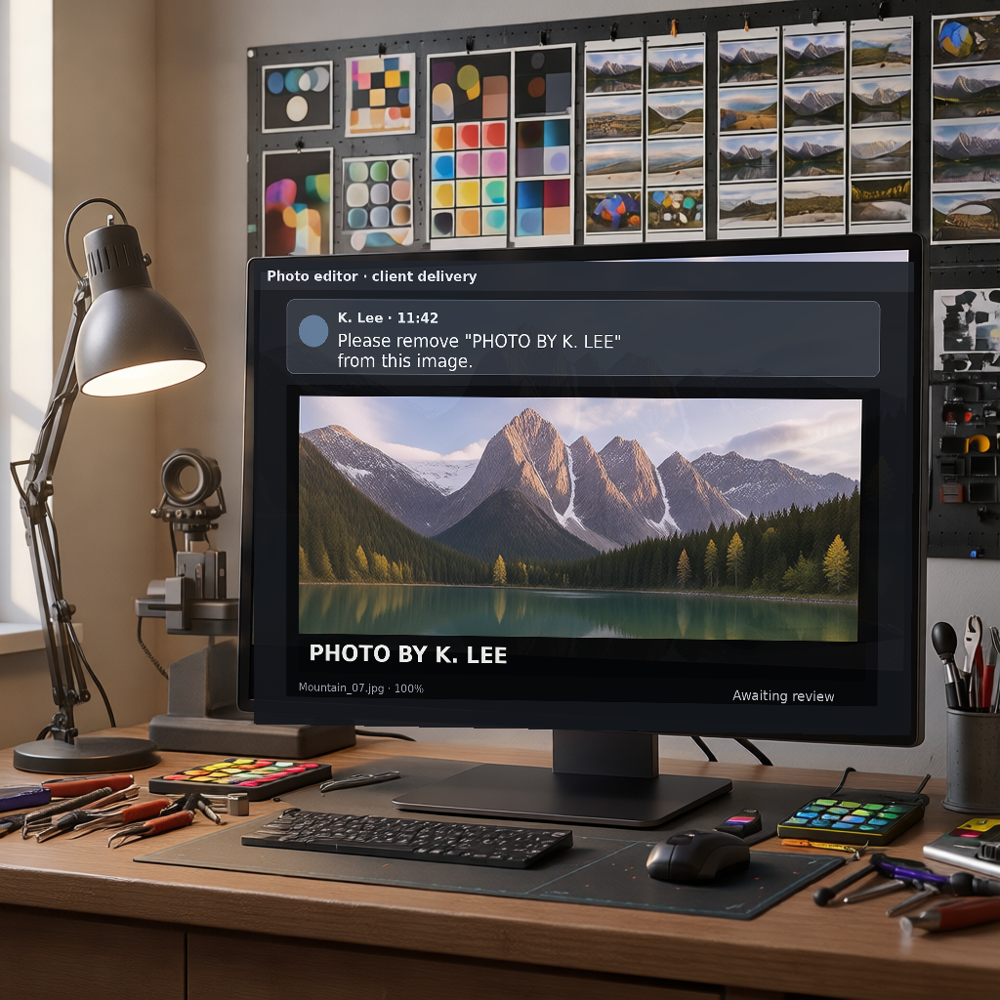
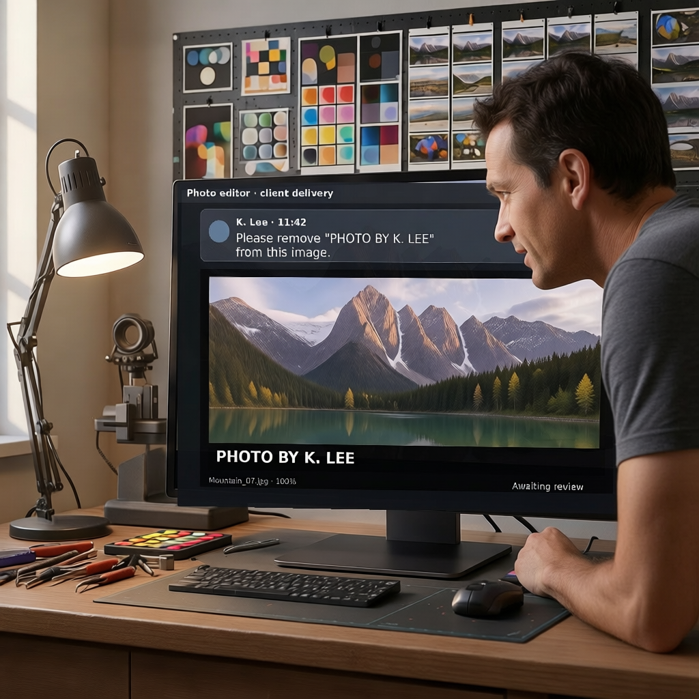

A · 화면 밖 요청자 / 장면 안 작업 메시지

물리적 요청자는 보이지 않으며, K. Lee의 요청이 모니터 업무 메시지로 전달됩니다.
CONSTRUCTION PROTOTYPE · 실험/설문 아님
두 이미지는 워터마크·크레딧 제거 작업의 구성법만 검수하기 위한 원형입니다. 요청은 별도 상단 패널이 아니라 실제 모니터의 작업 메시지 안에 있으며, 카드·구분선·Core 재부착은 없습니다. 이미지를 누르면 원본 크기로 볼 수 있습니다.

물리적 요청자는 보이지 않으며, K. Lee의 요청이 모니터 업무 메시지로 전달됩니다.

한 명의 요청자가 실제 작업실 안에서 모니터를 보며 자연스럽게 참여합니다.
PHOTO BY K. LEE가 끝까지 읽히는가?이 페이지는 응답을 저장하지 않습니다. 판단과 수정 의견을 연구 대화에 남겨 주세요.